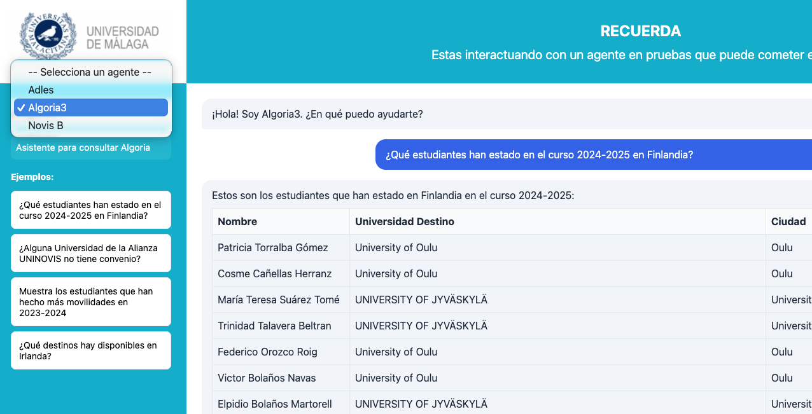

By: UNINOVIS-UMA IT TEAM
TOMMI is an easy to use educational tool that serves to create and test AI agents. With TOMMI:
TOMMI is built entirely on open source tools—Python, FastAPI, ChromaDB, and more—ensuring transparency and flexibility.
Caution: The use of TOMMI agents for other goals apart from training requires close supervision. IT experts should pay special attention to two main risks. First, no sensitive data should be added unless an IT expert confirms that the agent deployment is safe (e.g., only specific persons have access to the server). Second, adding new tools to TOMMI is feasible, but it may result in dangerous situations (e.g., a tool deleting your hard disk); modifications made on the agents’ templates are made at your own risk.
An agent is an AI-powered system that can understand natural language queries and respond intelligently. AI agents should not be confused with traditional AI assistants such as ChatGPT or Claude. The latter are powerful but generic: they rely solely on their training data, have no access to your private information, and cannot perform actions beyond generating text. An agent, by contrast, is specialized and connected. It can access specific knowledge bases (your documents, your database), retrieve relevant information on demand, and even execute actions through tools (run calculations, query APIs, send emails). While a traditional AI might say “I don’t have access to that information,” an agent built with TOMMI can actually look it up and give you a precise answer.
In educational and institutional settings, agents offer significant advantages. They can provide 24/7 availability to answer frequently asked questions about admissions, course schedules, or administrative procedures—reducing the workload on staff while improving response times for students. Agents can also serve as personalized learning assistants, helping students navigate complex documentation, summarize research papers, or explain institutional policies in plain language. For administrative staff, agents can automate repetitive inquiries and provide consistent, accurate information across departments. At the same time, improper use of agents may have severe consequences for educational institutions (e.g. sensitive data breach, open access to hackers, or even economic costs due to excess of use).
In order for educational institutions to benefit from this novel technology while at the same time minimizing risks, it is crucial that several actions are adopted. These include:
With TOMMI we bring a tool that may help universities to address the last two aspects. Regarding staff, TOMMI allows rapidly hands-on experience with AI Agents, which may accelerate the training process. Regarding end-users, its friendly but transparent interface may encourage use of AI Agents, thus fostering digital literacy and critical thinking about how these technologies work.
TOMMI supports three agent types, each suited for different use cases:
The simplest type. Loads all data into memory and includes it directly in the LLM context.
How it works: 1. Loads data from
data/data.md at startup 2. Includes the full data in every
system prompt 3. LLM generates response using the embedded context
Architecture:
┌──────────────┐
│ Question │────┐
└──────────────┘ │
▼
┌──────────┐ ┌──────────────┐
│ LLM │───▶│ Response │
└──────────┘ └──────────────┘
▲
┌──────────────┐ │
│ data.md │────┘
│ (static) │
└──────────────┘Best for: - Small to moderate knowledge bases (< 100KB) - FAQ systems - Static information assistants
Example: Conference information assistant that answers questions about schedules, speakers, and venues.
Uses semantic search to find relevant information before generating responses.
How it works: 1. Indexes documents from
data/docs/ into ChromaDB vector database 2. When a query
arrives, searches for the most relevant chunks 3. Includes only relevant
context in the LLM prompt 4. Generates response based on retrieved
information
Architecture:
┌──────────────┐
│ Question │──────────────────────┐
└──────┬───────┘ │
│ ▼
│ ┌──────────┐ ┌──────────────┐
│ │ LLM │───▶│ Response │
│ └──────────┘ └──────────────┘
│ ▲
│ ┌──────────────┐ │
└───▶│ Search │──────────┘
└──────┬───────┘ (relevant chunks)
│
┌──────▼───────┐
│ ChromaDB │◀── docs/ (PDF, TXT)
│ (vectors) │
└──────────────┘Best for: - Large document collections - Academic papers or manuals - Frequently updated content (supports re-indexing)
Example: Academic proceedings Q&A system that searches through hundreds of papers.
Converts natural language questions directly to SQL queries against a database.
How it works: 1. User asks a question in natural language 2. Agent uses the configured LLM (Mistral or Ollama) to convert the question to SQL 3. Executes the SQL query against a SQLite database (only SELECT queries allowed) 4. Formats results using Python (fast, no additional LLM call) 5. Displays results in an interactive HTML table
Architecture:
┌──────────────┐
│ Question │──────────────────────┐
└──────────────┘ │
▼
┌──────────────┐ ┌──────────┐ ┌──────────────┐
│ Schema │───────────────▶│ LLM │───▶│ Execute SQL │
│ (tables) │ │(text2sql)│ │ (SQLite) │
└──────────────┘ └──────────┘ └──────┬───────┘
│
▼
┌──────────────┐
│ Python │
│ (format) │
└──────┬───────┘
│
▼
┌──────────────┐
│ Response │
│ + HTML table │
└──────────────┘Best for: - Database exploration without SQL knowledge - Data analysis and reporting - Quick data lookups - Educational environments where users need to query data
Key features: - Single LLM call: Uses one LLM for SQL generation; formatting is done with Python for speed - Security: Only SELECT queries are allowed; INSERT, UPDATE, DELETE, and other modifying operations are blocked - Schema awareness: Automatically reads and understands the database structure - Interactive results: Displays query results in formatted HTML tables
Example: A university department needs to query a database of courses and professors. Users can ask “How many courses are in the Law department?” and get instant results without knowing SQL.
| Feature | Oneshot | RAG | ConsultaBD_SQL |
|---|---|---|---|
| Complexity | Low | Medium | Medium |
| LLM Calls per Query | 1 | 1 | 1 |
| Vector Database | - | ✓ | - |
| SQL Database | - | - | ✓ |
| Document Search | - | ✓ | - |
| Dynamic Knowledge | - | ✓ | ✓ |
| Python Version | Any | 3.11-3.13 | Any |
| Scenario | Recommended Type | Why |
|---|---|---|
| Simple FAQ with static information | Oneshot | Minimal complexity, fastest response |
| Q&A over many documents/PDFs | RAG | Semantic search scales to thousands of documents |
| Database queries by non-technical users | ConsultaBD_SQL | Natural language to SQL conversion |
| Need lowest latency | Oneshot | Single LLM call, no external lookups |
| Need to scale to thousands of documents | RAG | Vector database handles large collections |
| Privacy-sensitive data queries | ConsultaBD_SQL | Data stays local, only questions sent to LLM |
| Type | LLM Calls | Total Cost Profile |
|---|---|---|
| Oneshot | 1 | Low |
| RAG | 1 | Low |
| ConsultaBD_SQL | 1 | Low |
┌────────────────────────────────────────────────┐
│ AGENT TYPES │
├────────────────────────────────────────────────┤
│ │
│ ONESHOT RAG CONSULTABD_SQL │
│ ─────── ─── ────────────── │
│ │
│ Question Question Question │
│ + + + │
│ Data Search Schema │
│ │ Results │ │
│ │ │ │ │
│ ▼ ▼ ▼ │
│ [LLM] [LLM] [LLM] │
│ │ │ │ │
│ │ │ ▼ │
│ │ │ [SQL DB] │
│ │ │ │ │
│ │ │ ▼ │
│ │ │ [Python] │
│ │ │ (format) │
│ │ │ │ │
│ ▼ ▼ ▼ │
│ Response Response Response │
│ + HTML table │
└────────────────────────────────────────────────┘Choose based on your primary need:
Note: If you plan to use RAG agents and have Python 3.14+, install Python 3.12:
brew install python@3.12 # macOS
Run the setup script to configure the environment:
apps\setup.bat./apps/setup.shThe script will automatically create a virtual environment, install dependencies, and configure your API key.
tommi/
├── apps/ # Scripts and utilities
│ ├── setup.sh # Setup script (Linux/macOS)
│ ├── setup.bat # Setup script (Windows)
│ ├── crear_agente.py # Agent creation script
│ ├── crear_dist.sh # Distribution script (Linux/macOS)
│ └── crear_dist.bat # Distribution script (Windows)
├── prompts/ # Prompt templates for agent creation
│ ├── prompt_Oneshot.txt # Base prompt for oneshot agents
│ ├── prompt_RAG.txt # Base prompt for RAG agents
│ └── prompt_ToolCall.txt # Base prompt for toolcall agents
├── web/ # Central web service hub
│ ├── app.py # FastAPI server
│ ├── agent_runner.py # Agent discovery engine
│ └── static/ # Frontend files
└── agents/ # All agents are stored here
├── your_agent/ # Your custom agents
├── conf26_cloud/ # Example: conference assistant (cloud)
├── conf26_local/ # Example: conference assistant (local)
└── ...TOMMI supports two LLM providers: - Mistral Cloud (default) - LLMs on the cloud, requires API key - Ollama (optional) - Local LLMs, easy setup, good for development and privacy
For starters, Mistral Cloud is recommended as it requires no local setup.
| Model | Use Case |
|---|---|
mistral-large-latest |
Best quality, complex reasoning (default) |
mistral-medium-latest |
Balanced performance |
mistral-small-latest |
Fast responses, simple tasks |
The file web/.env sets the default configuration
for ALL agents:
# ============================================
# DEFAULT LLM Provider Configuration
# ============================================
# This is the DEFAULT configuration for all agents.
# Individual agents can override by adding LLM_PROVIDER to their own .env
# --- Cloud LLM (Mistral) - DEFAULT ---
LLM_PROVIDER=mistral
MISTRAL_API_KEY=your_api_key_here
MISTRAL_MODEL=mistral-large-latest
# --- To use Local LLM (Ollama) as default, comment above and uncomment below ---
# LLM_PROVIDER=ollama
# OLLAMA_BASE_URL=http://localhost:11434
# OLLAMA_MODEL=mistralNote: Replace
your_api_key_herewith an API key that you should obtain from Mistral at https://mistral.ai/.
The easiest way to create a new agent:
python apps/crear_agente.pyThe script will prompt you for:
When creating a new agent, you can choose from pre-defined prompt
templates instead of writing a system prompt from scratch. Templates are
stored in the prompts/ folder and provide a solid starting
point for each agent type.
Available templates:
| Template | Description |
|---|---|
prompt_Oneshot.txt |
Instructions for data-based assistants |
prompt_RAG.txt |
Instructions for document retrieval assistants |
prompt_Text2SQL.txt |
Instructions for database query assistants |
How it works:
During agent creation (python apps/crear_agente.py),
you’ll see:
System prompt:
Available templates:
1. prompt_Oneshot
2. prompt_RAG
3. prompt_Text2SQL
4. Your custom prompt
Select template [1-4]:Template variables:
Templates support the {agent_name} variable, which is
automatically replaced with your agent’s name. For example:
You are {agent_name}, an assistant with acess to tools...Becomes:
You are Mi_asistant, an assistant with acess to tools...Customizing templates:
prompts/ to change the default behavior for all new agents
of that type..txt
files in prompts/. They will automatically appear in the
selection menu.Tip: Templates are only used during agent creation.
Once an agent is created, its prompt is stored in agent.py
and can be edited independently.
The creator generates a complete agent structure:
your_agent/
├── agent.py # Core agent logic
├── app.py # FastAPI wrapper with AGENT_CONFIG
├── requirements.txt # Python dependencies
├── .env # API credentials
├── .gitignore # Security (ignores .env)
├── run.sh # Startup script
├── README.md # Documentation
└── data/
├── data.md # (oneshot/toolcall) Knowledge base (to be replaced by your own data)
├── docs/ # (rag) Document folder for indexing
└── database.db # (text2sql) SQLite database (to be replaced by your own database)Each agent defines its metadata in app.py:
AGENT_CONFIG = {
"id": "my_agent",
"name": "My Agent",
"type": "oneshot", # or "rag" or "toolcall"
"description": "Helps with specific tasks",
"welcome_message": "Hello! How can I help you?",
"example_queries": [
"What can you do?",
"Tell me about X"
]
}You can edit app.py at any time to add or remove example
queries, change the welcome message, update the description, or modify
any other metadata field.
Why data matters: LLMs have a knowledge cutoff date and no access to your private information. Without data, an agent is just a generic chatbot. With your data, it becomes a specialized assistant that can answer questions about your specific domain.
Oneshot agents load all their knowledge from a single Markdown file.
Data location: data/data.md
How to add data: 1. Edit data/data.md
with all the information your agent needs 2. Use Markdown formatting for
structure (headers, lists, tables) 3. Keep the file under ~100KB for
optimal performance
Example data/data.md:
# Conference information
## Sessions
- **Session A**: Description of session A, time, room
- **Session B**: Description of session B, time, room
## FAQ
### Where is the conference?
...Note: The entire file is included in every LLM prompt, so keep it concise and well-organized.
RAG agents index multiple documents and retrieve relevant chunks at query time.
Important: RAG agents require Python 3.11-3.13. ChromaDB is not compatible with Python 3.14+. If you see Error 307, install Python 3.12 and recreate the virtual environment.
Data location: data/docs/
Supported formats: .txt,
.md, .pdf
How to add data: 1. Place your documents in
data/docs/ 2. Use descriptive filenames (e.g.,
user-manual.md, api-reference.txt) 3.
Documents are automatically chunked and indexed at startup 4. After
adding new documents, call the /reindex endpoint
Example structure:
data/
└── docs/
├── chapter1-introduction.md
├── chapter2-installation.md
├── chapter3-configuration.md
├── faq.md
├── user-manual.pdf
└── troubleshooting.txtRe-indexing after changes:
curl -X POST http://localhost:8000/reindexHow it works internally: - PDF text is extracted
using pypdf - Documents are split into chunks (~500 tokens
each) - Each chunk is embedded using sentence-transformers
(all-MiniLM-L6-v2) - Embeddings are stored in ChromaDB at
data/chroma_db/ - On query, the 3 most relevant chunks are
retrieved and included in the prompt
Tip: Structure your documents with clear headers and sections for better retrieval accuracy.
ConsultaBD_SQL agents convert natural language questions to SQL queries, executing them against a SQLite database.
Data location: data/database.db
How to add data:
data/database.dbExample using SQL script:
cd your_agent/data
sqlite3 database.db < schema.sqlExample schema.sql:
CREATE TABLE courses (
id INTEGER PRIMARY KEY,
name TEXT NOT NULL,
department TEXT,
year INTEGER,
credits INTEGER
);
CREATE TABLE professors (
id INTEGER PRIMARY KEY,
name TEXT NOT NULL,
department TEXT,
email TEXT
);
INSERT INTO courses VALUES (1, 'Introduction to Law', 'Law', 1, 6);
INSERT INTO courses VALUES (2, 'Constitutional Law', 'Law', 2, 6);
INSERT INTO courses VALUES (3, 'Programming I', 'Computer Science', 1, 6);How it works:
ConsultaBD_SQL agents use a single LLM call for SQL generation, and Python for fast result formatting:
Configuration in .env:
# Using Mistral Cloud
LLM_PROVIDER=mistral
MISTRAL_API_KEY=your_key_here
MISTRAL_MODEL=mistral-large-latest
# Or using Ollama (local)
# LLM_PROVIDER=ollama
# OLLAMA_BASE_URL=http://localhost:11434
# OLLAMA_MODEL=mistralSecurity features:
API endpoints:
| Endpoint | Description |
|---|---|
GET /schema |
Returns the database schema |
POST /chat |
Process a natural language question |
Tip: The agent automatically reads the database
schema at startup. Well-designed table and column names (e.g.,
student_name instead of sn) help the LLM
generate more accurate SQL queries.
TOMMI offers two ways to interact with your agents:
The web hub provides a unified interface to all your agents.
Starting the server:
web/run_html_server.shweb\run_html_server.batAccess the web interface at http://localhost:8000
Once the server is running, open your browser and go to the address shown in the terminal.

Tip: The agent remembers your conversation, so you can ask follow-up questions without repeating context.
You can interact with agents directly from the terminal without starting a web server. This is useful for testing, automation, or quick queries.
Interactive CLI:
cd web
source .venv/bin/activate
python cli.pyThis will show available agents and let you select one. You can also specify the agent directly:
python cli.py my_agentOnce inside, type your questions and receive responses directly. Type
exit or salir to quit.
List available agents:
python cli.py -lTOMMI includes a batch testing tool that allows you to evaluate your agent by running multiple questions and collecting the responses. This is useful for:
Usage:
cd web
python batch_test.py <agent_id> <questions_file> [options]Options:
| Option | Description |
|---|---|
--output, -o |
Custom output file (default:
<input>_respuestas.json) |
--session, -s |
Maintain session context between questions |
--list-agents, -l |
List available agents and exit |
--no-save |
Display results in console without saving |
Example:
evals/my_questions.txt with one question
per line:# Lines starting with # are ignored
What is TOMMI?
How do I create an agent?
What types of agents are available?python batch_test.py my_agent evals/my_questions.txtevals/my_questions_respuestas.json
with all questions, responses, and metadata.By default, TOMMI uses Mistral Cloud. For local inference, TOMMI supports two options: - Ollama - Easy to use, good for development and testing - vLLM - High-performance inference, better for production workloads
To use local LLMs with Ollama, you have two options:
Edit web/.env to use Ollama as the default:
# --- Local LLM (Ollama) ---
LLM_PROVIDER=ollama
OLLAMA_BASE_URL=http://localhost:11434
OLLAMA_MODEL=mistral
# Comment out the Mistral configuration
# LLM_PROVIDER=mistral
# MISTRAL_API_KEY=your_api_key_hereKeep Mistral as the default in web/.env, and configure
individual agents to use Ollama by adding LLM_PROVIDER to
their .env file:
# agents/my_local_agent/.env
# This agent OVERRIDES the default to use Ollama
LLM_PROVIDER=ollama
OLLAMA_BASE_URL=http://localhost:11434
OLLAMA_MODEL=mistralImportant: An agent’s .env only
overrides the default if it contains LLM_PROVIDER. If
LLM_PROVIDER is not defined (or is commented out), the
agent uses the default from web/.env.
TOMMI supports hybrid deployments where each agent can use a different LLM provider:
| Agent | Configuration | Provider Used |
|---|---|---|
conf26_nube |
No LLM_PROVIDER in .env |
Default (Mistral Cloud) |
conf26_local |
LLM_PROVIDER=ollama |
Ollama (local) |
pisha |
LLM_PROVIDER=mistral + larger model |
Mistral Cloud (mistral-large) |
adles |
No LLM_PROVIDER in .env |
Default (Mistral Cloud) |
This is useful for: - Running sensitive data agents locally while using cloud for others - Using higher-quality cloud models for complex agents - Balancing costs between local and cloud resources
After changing any .env configuration, restart the web
server for changes to take effect.
The web interface displays a badge in the sidebar showing the current LLM provider:
| Badge | Meaning |
|---|---|
| 🏠 Local (Ollama: model) | Using Ollama with the specified model |
| ☁️ Cloud (Mistral) | Using Mistral cloud API |
Hover over the badge to see additional details (model name, server URL).
To use Ollama locally:
ollama pull mistralollama serveweb/.env with the Ollama settings (see
above)You may notice that cloud models produce better results than local models. This is expected due to fundamental differences in how these models operate:
| Aspect | Cloud (Mistral) | Local (Ollama) |
|---|---|---|
| Model size | Full model, uncompressed | Quantized (compressed) for local hardware |
| Precision | 16-bit floating point | 4-bit or 8-bit quantization |
| Parameters | All parameters active | Reduced precision sacrifices some quality |
| Updates | Frequently updated by Mistral | Manual updates required |
| Reasoning | Better coherence and accuracy | May struggle with complex tasks |
The trade-off: - Local = Privacy + No API costs + Low latency - Cloud = Better quality + More capabilities + Usage costs
If you want better results from Ollama while staying local, try:
# Other high-quality models
ollama pull mixtral:8x7bThen update the agent’s .env:
OLLAMA_MODEL=mixtral:8x7bTable: European LLM models
| Model | Number of parameters | Minimum RAM (FP16) | Minimum RAM (4-bit) | GPU? | Notes |
|---|---|---|---|---|---|
| Mistral-7B | 7B | ~14 GB | ~4-6 GB | Recommended | Works on M1 Max with 4-bit quantization. |
| Mistral-7B-Instruct | 7B | ~14 GB | ~4-6 GB | No | Instruction-tuned version. |
| Mixtral-8x7B | 47B (MoE) | ~30-40 GB | ~10-12 GB | Yes | Sparse model (Mixture of Experts), more efficient than a dense 47B model. |
| Mistral-large | ~120B (estimado) | ~240 GB | ~30-40 GB | Yes | Requires high-performance hardware. |
Notes: - FP16: Standard precision (16-bit), requires plenty of RAM. - 4-bit: Aggressive quantization, reduces RAM usage but may slightly affect quality. - Recommended GPU: For models >13B, a GPU (such as NVIDIA A100 or RTX 4090) accelerates inference. - Apple M1 Max (32 GB): Only viable for models ≤7B with 4-bit quantization. - Mistral-large: Not feasible on an M1 Max; requires at least 64 GB of RAM and a powerful GPU. - OpenEuroLLM, which is supported by the European Commission, is expected to launch further LLMs during 2026.
Technically, Ollama does support running non-quantized (FP16/FP32) versions of models, but for Mistral-large (123B parameters), there are major practical limitations:
Q4_K_M) by default for large
models to make them feasible on consumer hardware. Non-quantized
versions are rarely provided for models of this size due to their
impractical memory demands [apxml.com].Note: Conversation logging should only be used during testing phases. Disable it in production environments to protect user privacy.
TOMMI can log all conversations to a file for auditing or analysis
purposes. Logs are stored in web/logs/conversations.log and
include:
Enabling/Disabling logging:
During installation, the setup script asks whether to enable logging
(default: disabled). You can change this setting later by editing the
web/.env file:
ENABLE_LOGGING=true # to enable
ENABLE_LOGGING=false # to disableValid values: true, 1, yes
(enabled) or false, 0, no
(disabled).
| Task | Command |
|---|---|
| Create new agent | python apps/crear_agente.py |
| Start web hub | web/run_html_server.sh (Linux/macOS) or
web\run_html_server.bat (Windows) |
| Interactive CLI | cd web && source .venv/bin/activate && python cli.py |
| CLI with specific agent | python cli.py my_agent |
| List agents (CLI) | python cli.py -l |
| Task | Endpoint |
|---|---|
| List agents | GET /api/agents |
| Chat | POST /api/chat |
| Stream chat | GET /api/chat/stream |
| Reindex RAG | POST /reindex |
| Get DB schema (ConsultaBD_SQL) | GET /schema |
| Task | Windows | Linux/macOS |
|---|---|---|
| Initial setup | apps\setup.bat |
./apps/setup.sh |
TOMMI uses structured error codes to help you quickly identify and resolve issues. When an error occurs, you’ll see a code like Error 101 or Error 305. Use this reference to understand and fix the problem.
| Range | Category | Description |
|---|---|---|
| 1xx | LLM Connection | Problems connecting to Ollama or Mistral |
| 2xx | Agent | Issues with agent configuration or loading |
| 3xx | Data | Problems with data files, PDFs, or databases |
| 5xx | Server | Server-side or streaming errors |
| Code | Error | Cause | Solution |
|---|---|---|---|
| 101 | Ollama is not running | Ollama service is not started | 1. Install Ollama from https://ollama.com 2. Run: ollama serve |
| 102 | Model not found in Ollama | The specified model hasn’t been downloaded | Run: ollama pull <model_name> |
| 103 | Ollama returned an error | Ollama is running but returned an HTTP error | Check Ollama logs; restart Ollama service |
| 104 | Ollama timeout | Ollama didn’t respond within 5 seconds | Check that Ollama is running: ollama serve |
| 105 | MISTRAL_API_KEY not configured | Missing API key for Mistral Cloud | Add MISTRAL_API_KEY=your_key to .env
file |
| 106 | Invalid Mistral API key | The API key is incorrect or expired | Get a new key at https://console.mistral.ai |
| 107 | Mistral API error | Mistral returned an HTTP error | Check Mistral status at https://status.mistral.ai |
| 108 | Cannot connect to Mistral | Network issues or Mistral unavailable | Check your internet connection |
| 109 | Unknown LLM error | Unexpected error during LLM health check | Check server logs for details |
| Code | Error | Cause | Solution |
|---|---|---|---|
| 201 | Agent not found | Agent ID doesn’t exist | Verify the agent folder exists in agents/
directory |
| 202 | Agent file not found | Missing agent.py in agent folder |
Ensure the agent directory contains both agent.py and
app.py |
| 203 | Invalid agent configuration | AGENT_CONFIG in app.py is malformed |
Check syntax of AGENT_CONFIG dictionary in
app.py |
| 204 | Agent not initialized | Agent failed to initialize | Restart the server; check agent initialization logs |
| 205 | Failed to load agent | Syntax error or import error in agent code | Check the agent’s Python code for errors |
| Code | Error | Cause | Solution |
|---|---|---|---|
| 301 | Data file not found | Missing data/data.md |
Create data/data.md with your knowledge base
content |
| 302 | No documents in docs folder | Empty data/docs/ for RAG agent |
Add .txt, .md, or .pdf files
to data/docs/ |
| 303 | PDF extraction error | Corrupted PDF or pypdf issue | Verify PDF opens correctly; run pip install pypdf |
| 304 | ChromaDB error | Database corruption or permission issue | Delete data/chroma_db/ and call /reindex
endpoint |
| 305 | Database not found | Missing SQLite database | Create or copy your database to data/database.db |
| 306 | Context too large | data/data.md exceeds 100KB |
Reduce file size or switch to RAG agent type |
| 307 | ChromaDB Python incompatible | ChromaDB not compatible with Python 3.14+ | Install Python 3.12 or 3.13 and recreate venv |
| Code | Error | Cause | Solution |
|---|---|---|---|
| 501 | Streaming error | Error during response streaming | Check server logs for details |
| 502 | Session not found | Invalid or expired session ID | Start a new conversation |
| 503 | Internal server error | Unexpected server-side error | Check server logs; restart if needed |
| 504 | Port in use | Another process is using the server port | Run ./liberar-puerto.sh 8000 to free the port |
Port already in use (Error 504): If you see
ERROR 504. Port in use, it means another process is using
port 8000 (often a previous server instance that wasn’t closed
properly). To fix it:
cd web
./liberar-puerto.sh 8000Then start the server again. You can use this script with any port number.
Check the error code: Look for “Error XXX” in the message and find it in the tables above.
Check logs: Review the terminal output where the server is running:
# Logs show detailed error information
cd web && uvicorn app:app --reloadVerify environment: Ensure the virtual environment is activated:
source .venv/bin/activate # Linux/macOS
.venv\Scripts\activate # WindowsTest components individually:
ollama list and
ollama run mistral "Hello"python cli.py <agent_id>
before web interfaceRestart services: After changing
.env files, restart the web server for changes to take
effect.
Check file permissions: Ensure the user running TOMMI has read/write access to agent directories and data files.